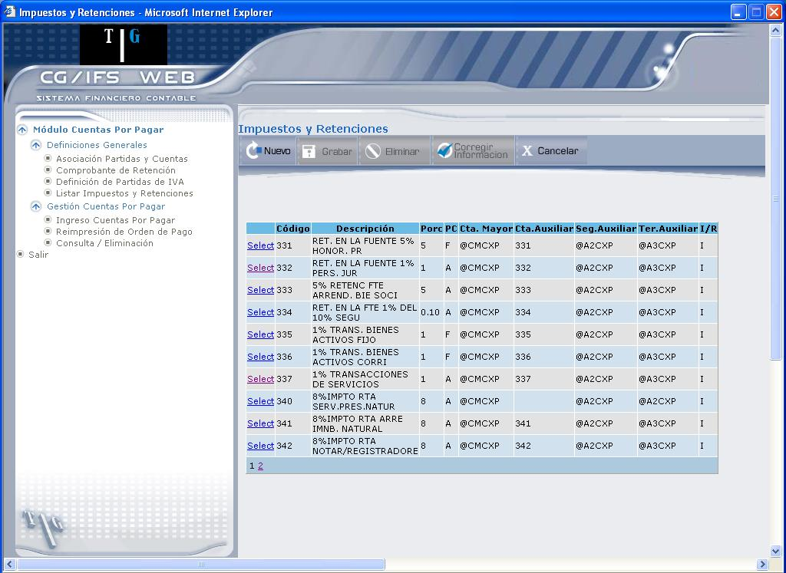
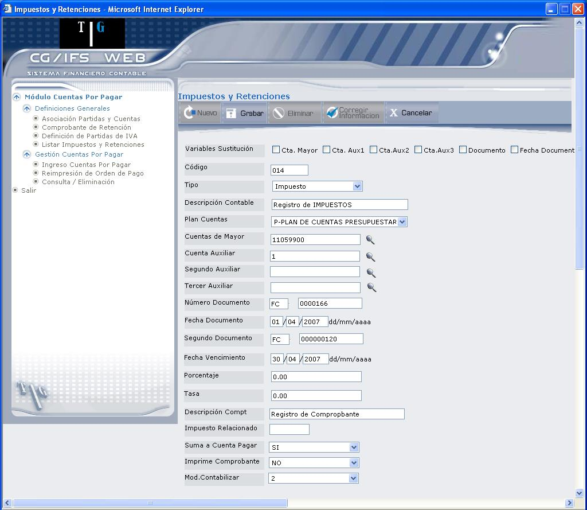
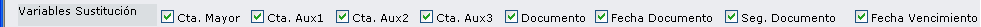

Listar Impuestos y Retenciones
Esta opción permite definir los posibles impuestos que se utilizarán en el sistema, sobre todo en la opción de Cuentas por Pagar, que se explica en este manual.
Al ingresar a esta opción se despliega la pantalla que muestra la Figura 3.18. Mediante esta pantalla podrá consultar o ingresar un nuevo comprobante de Impuestos
El listado presenta la siguiente información: Código que se asigna al Impuesto o la Retención ingresada, Descripción, porcentaje que se aplica al Impuesto o la Retención, Código del Plan de Cuentas, Código de la Cuenta de Mayor, Código de las Cuentas Auxiliares y si se trata de Impuesto o Retención (I ó R).

Figura 3. Listar Impuestos y Retenciones.
- Para consultar un comprobante presione el vínculo Select.
- Para ingresar un nuevo comprobante presione el botón NUEVO.
BOTÓN
La información que debe ingresar es la siguiente:
Variables Sustitución:
Estas variables permiten sustituir las Cuentas de Mayor, las Cuentas de Auxiliar, Documento, Fecha Documento, Segundo Documento y Fecha de Vencimiento, por variables ya definidas que se describirán cada una a continuación:
Código:
Digite el código que se asigna al Impuesto o la Retención que vaya a registrar.
Tipo:
Seleccione si desea registrar un Impuesto o una Retención.
Descripción Contable:
Digite la descripción que se le va a dar al Impuesto o la Retención.
Plan Cuentas:
Seleccione el Plan de Cuentas con que trabaja la Compañía.

Figura 3. Ingreso de Impuestos y Retenciones.
Los siguientes campos pueden ser sustituidos por las variables de sustitución que se encuentran en la parte superior:

Al seleccionar uno de los casilleros de las variables de sustitución se despliega la variable correspondiente, como se describe en la Tabla 3.1.
|
Descripción de Campo |
Variable de Sustitución |
Descripción de Variable |
|
Cta. Mayor: |
@CMCXP |
Cuenta de Mayor de la Cuenta por Pagar. |
|
Cta. Aux1: |
@A1CXP |
Primer Auxiliar de la Cuenta por Pagar. |
|
Cta. Aux2: |
@A2CXP |
Segundo Auxiliar de la Cuenta por Pagar. |
|
Cta. Aux3: |
@A3CXP |
Tercer Auxiliar de la Cuenta por Pagar. |
|
Documento: |
@DOC1CXP @NCR |
Documento de la Cuenta por Pagar. Número de Comprobante de Retención. |
|
Fecha Documento: |
@FDOCCXP |
Fecha de Documento de la Cuenta por Pagar. |
|
Segundo Documento: |
@DOC2CXP |
Segundo Documento de la Cuenta por Pagar. |
|
Fecha Vencimiento: |
@FVENCXP |
Fecha de Vencimiento de la Cuenta por Pagar. |
Tabla 3.1. Variables de Sustitución
Cuentas de Mayor:
Seleccione la cuenta de mayor correspondiente al movimiento, caso contrario seleccione la variable de sustitución marcando el casillero Cta. Mayor
Cuenta Auxiliar:………Tercer Auxiliar:
Seleccione estas cuentas si la Cuenta de Mayor lo requiere, caso contrario seleccione las variables de sustitución de las Cuentas Auxiliares.
Número Documento:
Aquí pueden observarse dos campos: en el primero se ingresa cualquier tipo de documento que haga referencia al documento que está registrando y en el segundo se digita el número de documento. Si escoge la variable de sustitución Documento, deberá seleccionar entre dos posibles opciones.
Fecha Documento: (sólo si la Cuenta de Mayor la requiere)
Digite la fecha en que se registra el documento, con formato dd/mm/aaaa, caso contrario seleccione la variable de sustitución correspondiente.
Segundo Documento:
Documento de referencia para el usuario, que depende de la parametrización anterior y si la Cuenta de Mayor lo requiere o puede seleccionar la variable de sustitución correspondiente.
Fecha Vencimiento: (sólo si la Cuenta de Mayor la requiere)
Cuando la Cuenta de Mayor es de cartera (G3) calcula el primer vencimiento según la fórmula de pago del memo. Si no existen datos en el memo anotar la fecha de vencimiento de acuerdo con el valor DEBE/HABER según esté definida la Cuenta de Mayor. O puede seleccionar la variable de sustitución correspondiente.
Porcentaje:
Se digita el porcentaje que se asigna al impuesto.
Tasa: (opcional, sólo si se usa Moneda Extranjera)
Digite la tasa de cambio de la moneda, en la que está trabajando.
Descripción Compt. (Comprobante):
Digite la descripción del comprobante.
Impuesto Relacionado:
Se utiliza para los códigos de impuestos de IVA.
Suma a Cuenta Pagar:
Seleccione “Si”, cuando desee que el valor se sume a la Cuenta por Pagar, caso contrario seleccione “No”.
Imprime Comprobante:
Indique si el comprobante de impuestos o retención se imprime o no.
Mod. Contabilizar:
Es el modo en que se contabilizará y tendrá un uso futuro. El valor por defecto es 1.
Por último presione el botón GRABAR, una vez que el registro se encuentra grabado, los campos se muestran protegidos.
BOTONES
Created with the Personal Edition of HelpNDoc: Free EBook and documentation generator